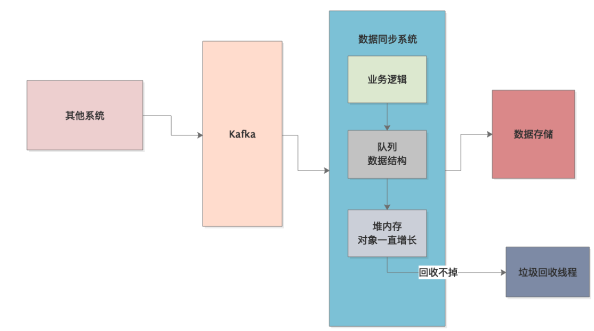

JVM实战（34）——内存溢出之消息队列处理不当
一、简介
本章，我们将介绍一个因为处理消息队列中的数据不当而引起的内存溢出问题，先来看下系统的背景。
1.1 系统背景
这是一个线上的数据同步系统，专门从Kafka消费其它系统送进去的数据，处理后存储到自己的数据库中：
就这么简单的一个系统，生产上却时不时报出OOM异常，然后就得重启系统。重启系统后，Java堆内存使用率越来越高，直到下次OOM异常。这种情况要么是因为系统并发太高，对象来不及回收，要么就是发生了内存泄漏，很多对象赖在内存里，无论如何就是GC不掉。
根据监控系统的显示，系统的访问量并不高，所以很可能就是因为某种对象”赖在了内存里“，然后不断触发GC，但就是无法回收掉：
二、问题分析
我们通过jstat观察系统运行时JVM的情况，发现老年代的对象一直增长，直到触发Full GC，但是Full GC根本回收不掉老年代中的对象。
下面就要通过MAT来确认下到底是什么对象一直进入老年代，在内存快照中，我们发现有一个队列数据结构，里面引用了大量的对象，正是这些对象一直占据内存不能被回收导致了OOM。
这个队列数据结构是啥？我们根据MAT分析线程调用栈，发现系统从Kafka消费的数据，首会先被存入到该队列数据结构中，然后接着程序再慢慢从这个队列中读数据，做些处理后写入到数据库中：

我们发现，写这个代码的童鞋每次从Kafka消费几百个数据（Kafka支持批量消费数据），把它们存到一个List中，然后再把这个List放入上述的数据结构。这就是导致了数据同步系统中的队列里面积压了几十万甚至几百万的数据，数据处理的速度远远比不上从Kafka消费的速度，只要数据还是停留在队列数据结构中，就无法被回收，这样最终导致了内存溢出：
三、系统优化
根据分析，出现上述问题的根本原因是：队列的生产和消费速率没有控制好。从Kafka中消费消息放入内存队列的速度是非常快的，而从内存队列中消费数据进行处理，然后存储到数据库，则相对要慢很多，最终就导致内存队列快速积压数据，引发内存溢出。另外，内存队列中每个元素都是List的做法更是导致了内存队列的容量大幅度膨胀。
所以，解决方案就是限制内存队列中的最大元素个数，然后当内存队列满了以后进行阻塞，每次往内存队列里放数据时也不要再用List，直接一个元素一个元素放，可以用BlockingQueue实现：
四、总结
本章，我们分析了一个因为内存队列处理不当引起的内存泄漏问题，本质是程序逻辑没写好，这也是本系列的最后一章。通过本系列的各个实战案例，相信读者也积累了不少JVM优化的经验，最重要的还是要归纳总结、举一反三，在实践中去印证自己所学的知识，然后再总结完善，最终融会贯通。